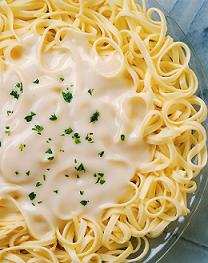
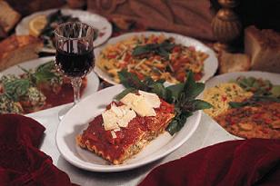
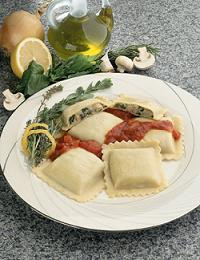

Pasta Divine has an extensive carry out menu including many of our sandwiches and salads. In addition, each month we feature a few of our most popular dinner dishes for carry out. We try to make carry out very convenient for our customers. You do not even have to get out of your car and come into the restaurant; we deliver the pasta to your car door! Just phone us when you are close to the restaurant, and we will bring your steaming hot pasta dishes out to you.
- Fettuccine Alfredo
- Lasagna
- Ravioli

Our fettuccine alfredo dish is a traditional Italian recipe your family will love! The secret is in our rich fettuccine alfredo sauce. The sauce is what makes this dish so popular. The alfredo sauce recipe comes from the Lazio area of Italy. The cream cheese that we use in our sauce is the best that is made, and that adds to the creamy richness. Because this fettuccine dish is so simple, it's important to use good-quality ingredients.
Go to Top
Lasagna was Grandpa Salvatore's favorite dish. His Mother used to make lasagna for the whole neighborhood back in the Toscana area of Italy where she grew up. Our lasagna is brimming with a spiced beef and pork filling mixed with our secret marinara sauce. For lighter fare, you can choose our vegetable lasagna. This healthy meal is filled with a mix of fresh vegetables together with the same marinara sauce.
Go to Top
Ravioli is traditionally two pieces of thin pasta dough filled with meat, cheese, or vegetables. Our ravioli comes from the Umbria area of Italy where they mix the filling with a rich pesto sauce combined with warm yogurt. This makes the ravioli creamy as well as mouthwatering. You can order our ravioli as prepared or purchase frozen ravioli to make later. Either way, this dish is an award-winner.
Go to TopThe above three dishes are the special carry out dinners that we are featuring this month. We change the dishes each month, so watch for the new dishes that we are featuring in the future. To place a carry out order, please call us at (206) 555-PASTA or e-mail us at pastadivine@isp.com. If you use e-mail, please include the following information: 1) the name of the dish, 2) the number of servings that you would like, 3) the time that you would like to pick up your order, and 4) your phone number in case we have any questions. We will send an e-mail response back to you to let you know that we did receive your order.
When picking up your order, please phone us when you get near the restaurant. We will bring your food out to you! We do accept our coupons for carry out orders, so please indicate that you have a coupon when you phone or e-mail us.